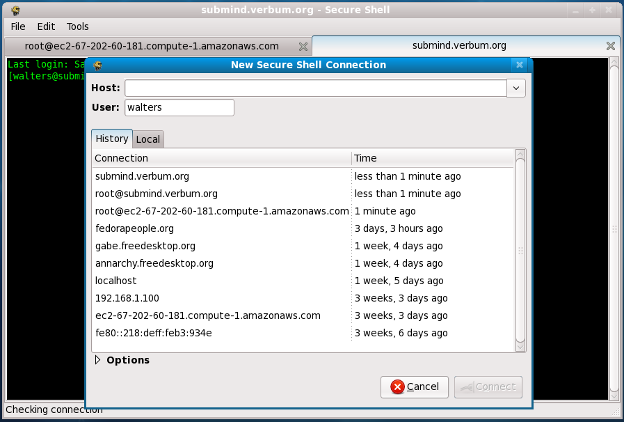
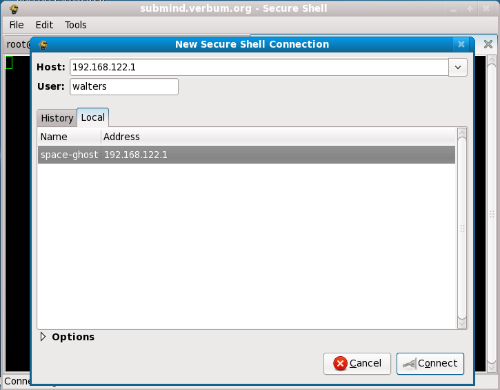

HotSSH was written by Colin Walters. Website modified from Cheese, which is Copyright © 2007,2008 daniel g. siegel
GNOME and the foot logo are trademarks of the GNOME Foundation.
Optimized for standards.